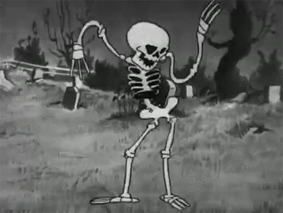
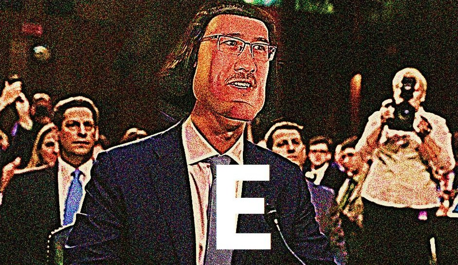

We onSomething Different
Random
HAPPY HALLOWEEN, IDIOTS

I don't know what I'm doing
make sure you turn number 1 into letter 1
Here's a picture of wdw :)
Hover over the picture!
Yes, I AM crabby. And you wanna know why? Because I have crabs. That's right. I thought it would be all fun a and games to go to Mexico and have sex with a hooker named "los cangrejos." It turns out in spanish that means "the crabs." So the next time you think to yourself, "hey! I'll have sex with a woman whose name, in that language, means "the crabs," maybe you'll open up your traveler's dictionary.
But hey,
Now you know.
Pretzels. What are they? Twirly, twirly birds that you grab with your hands and your wrap them around. Where did they come from? Where did they go? Back in 1987, a young man named Jordan B. Prietzen walked into a kitchen and said "Hey, I'd like to make myself a little bit of a snack!" So he grabbed some flour, he grabbed some yeast. He grabbed some salt, maybe a little bit of pepper, and he went to work. Pulled up his sleeves and he washed his hands, as you always do before cooking a great meal. And he splashed them into a bowl, mixing vigorously until.... out of the oven came something brand new. Something his eyes had never seen before. Something that would take the 90's by storm. The Pretzel has been made.
I'm gonna commit apoptosis.
IM GOING TO COMMIT DELETE MY MINECRAFT ACCOUNT
ANYWAY here is a video that took way too long to code of Miss Devon (video may not work if you are on mobile)
Stream Lost in Translation
Hint for the location of the secret:
